Skyfashion - Premium WordPress Theme
Documentation
- Created: 07/13/2012
- latest Update: 07/13/2012
- By: Apollo13
- Email: info@apollo13.eu
Thank you for purchasing our theme. In case of any questions or doubts, do not hesitate to contact us via our Support Forum: http://support.apollo13.eu/. We will do our best to solve any problem concerning the project. At the same time we invite you to visit often our profile on ThemeForest since there will be appearing the improvements of our project and the newest actualizations.
Features
- WordPress 3.2+ Support
- Valid HTML 5
- Flexible Home Page Modifications
- Filterable Portfolio
- Light and Dark Skin
-
Extra Features:
- 6 Options Portfolio List
- Change the Background Image and Color
- Extra Features can be Enabled or Disabled Depending on the Needs
- Powerful and Easy to use Admin Panel
- Post Format Support ( Video, Images and Galleries )
- Sliders can display Video and Images together
- 13 Special Widgets: Simple Text, Twitter, Recent Posts, Popular Posts, Related Posts, Recent Projects, Featured Projects, Related Projects, Custom Menu, Archives, Categories, Recent Comments, Flickr
- Google Font
- 19 Shortcodes
- Translation Ready
- Forms Validation ( Blog, Portfolio and Contact )
- Dropdown Menu
- Google Analytics Ready
- Cross-Browser Compatibility
- Extensive Documentation
- Forum Customer Support
Support Forum
In case of any questions or doubts, do not hesitate to contact us via our Support Forum http://support.apollo13.eu/
Instruction how to get Purchase Code:
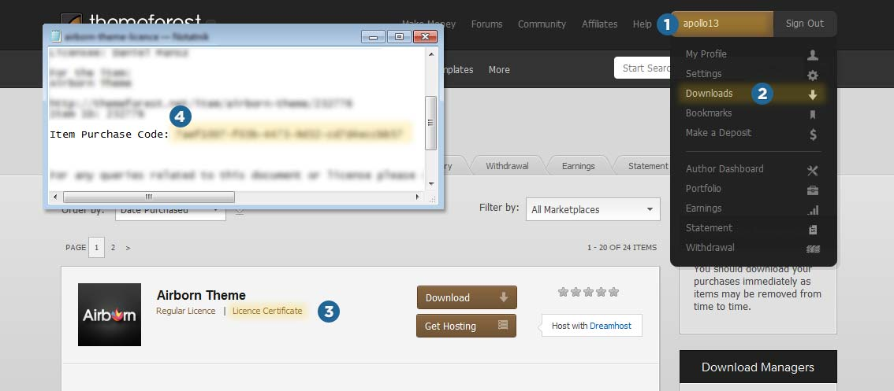
Installation
Install
To install theme you can:
-
Upload it via FTP
- Unpack files from theme.zip to new folder named skyfashion
- upload whole skyfashion folder to /wp-content/themes/ in your wordpress installation
- login to admin panel in Wordpress, and go to Appearance->Themes and click Activate below Skyfashion theme
-
Upload it via admin panel
- go to Appearance->Themes->Install Themes(Tab)->Upload and choose file theme.zip
- go to Appearance->Themes and click Activate below Skyfashion theme
After that You will see new menu named Skyfashion and that is where all fun begins :-) Also you will see Portfolio menu. We will write about it later.
Update
Best way to update theme is to use plugin such as http://wordpress.org/extend/plugins/easy-theme-and-plugin-upgrades/. You can also manulay delete theme and upload new version. If you have made some changes in theme files you will have to manualy update to keep your changes.
Remember to always backup your data before update!
Skyfashion - Main Settings
Here you will set most basic options of theme. You should visit this place right after installing theme.
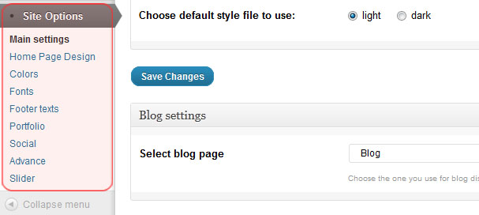
Customize Logo
Upload logo image. Image should be 200x160px or less(auto centered). There, are two inputs, one for light version, and one for dark version of layout. You can upload same image, or only use one. If you use theme switcher:(described below), those two inputs will be helpful.
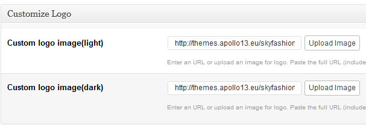
Theme styles
Skyfashion comes with two color version, and here you can choose between them.
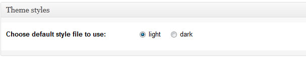
Blog settings
Here You have to choose which page is Blog page.

Contact form settings
Give e-mail address for contact page form.
Google Analytics
Code for statistics from google
Skyfashion - Home Page Design
Here you what will be displayed on main page of your site.
HelloText
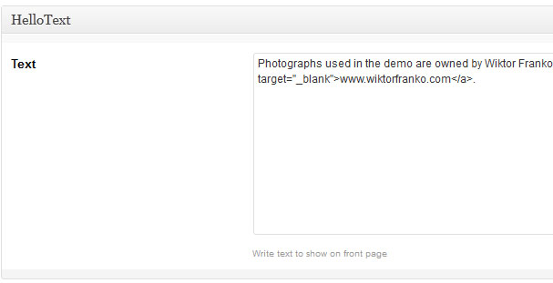
Provide welcome text for hello block. If you leave it blank, hello block will not show up.
Latest works
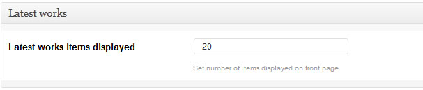
Set number of items displayed on front page.
Latest from Blog
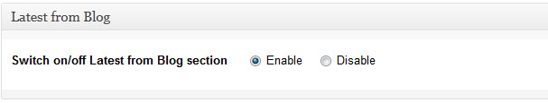
You can hide or show Latest post block.
About Text
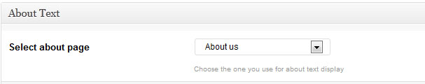
You have to select page which will be show in the About us block on the Front page.
Skyfashion - Colors
Here you can choose colors for template's elements.
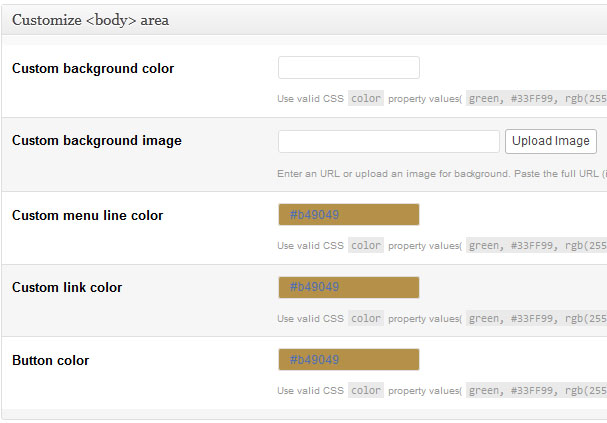
Skyfashion - Fonts
In this panel you can choose between Google Fonts and normal fonts.
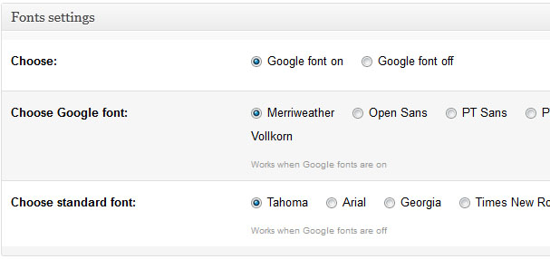
Skyfashion - Portfolio settings
Portfolio page
It is main page for your portfolio. You have to specify that one to give access to your works(also makes back link in portfolio works).
Icons size
This option allows you to set thumbs size in the portfolio list.
Description position
Choose between description on hover or below icon.
Sorting type
You can choose between dynamic sorting without reload of page and normal static sort.
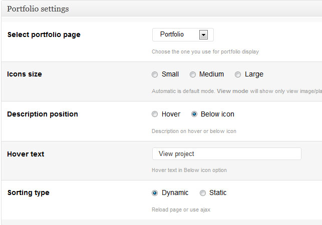
Shortcodes
In Skyfashion we use shortcodes editor. You can see it below:
- post editor
- page editor
Use it to insert predefined elements for your content. To see available shortcodes in Skyfashion theme check our demo page http://themes.apollo13.eu/skyfasion/ and select shortcode category from submenu.
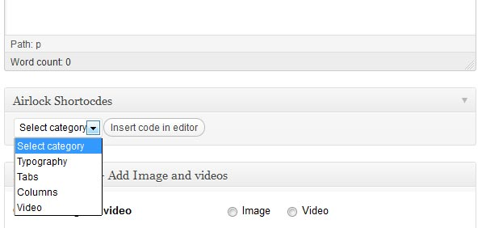
Adding Blog
To Blog works as it should you have to follow this steps:
- Go to your wordpress admin->Pages->Add new
- Add new page named Blog. You can leave them empty.
- In the menu Page Attributes in the right side in section Template, choose Blog
- Go to Site Options->Main settings
- Choose 'Select blog page'
- Save changes.
- You are done :-)
Adding Portfolio
To add Portfolio page you have to follow this steps:
- Go to your wordpress admin->Pages->Add new
- Add new page named Portfolio. You can leave them empty.
- In the menu Page Attributes in the right side in section Template, choose Blog
- Go to Site Options->Portfolio
- Choose 'Select portfolio page'
- Save changes.
- You are done :-)
Add new portfolio item
Adding new item in portfolio is same as adding new post with few bonus things.
- Use Editor to add description about your work
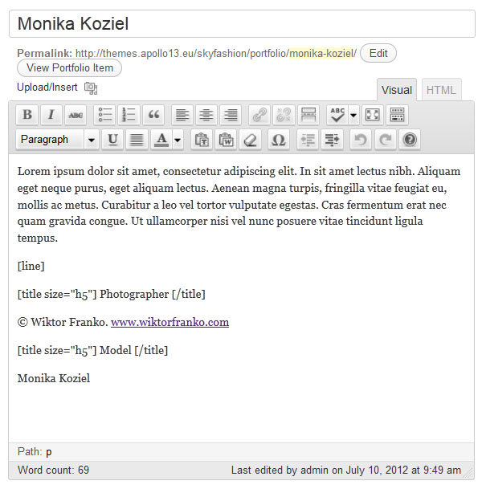
-
Portfolio details you have few options to set for your portfolio item:
-
Slider here you set way to display video/image in this project. 2 options:
- vertictal - each item below other
- slider - all items in one slider (You have to know that if you post video into project it will automatically switch slider off).
- Custom thumbnail - image that will represent your work. If you don't set it, thumbnail will be generated from yours photos in this project.
- Portfolio details - Add Image and videos.
- Short description under title - This text will show on the in the portfolio list.
-
Slider here you set way to display video/image in this project. 2 options:
- Next we have Add Image and videos box. Here you add info for each added image or video. This info is media type(image/video), caption text that lightbox will be used in lightbox insted of caption text.
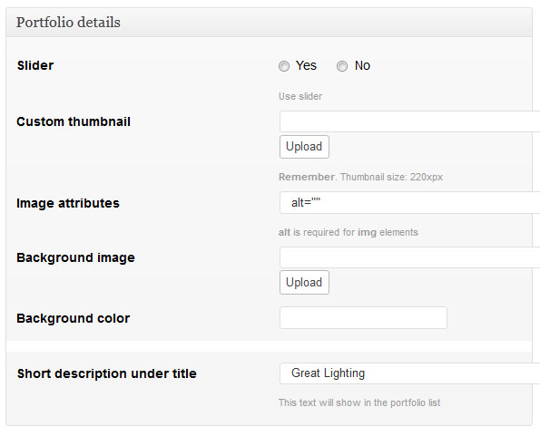
Multi upload
In Skyfasion is possibility to use multi upload in new portfolio item and new post. To use it you have to use wordpress 3.3 or newer. Using it is simple as it uses same interface as uploading tool in wordpress 3.3.
To use it:
- Open new post/portfolio
- Click Select files(or use drag and drop)
- Choose as many Images as you need.
- Wait till all files are loaded.
- Add titles,descriptions to new added fieldsets in Add Image and videos box
- You are done. Don't forget to save changes.
This tool is as simple as described here so please don't expect to be smarter. It only intends to make working with Skyfashion more easier and faster.
Widgets
In Appearance->widgets menu you will see set of widgets. To use it just drag and drop them in Sidebar you will like to see them. Available sidebars:
- Footer sidebar - Widgets from this sidebar will appear in the footer
- Blog sidebar - Widgets from this sidebar will appear on main blog page
- Blog post sidebar - Widgets from this sidebar will appear on blog posts
- Portfolio sidebar- Widgets from this sidebar will appear on every site of portfolio(not on main)
- Contact sidebar - Widgets from this sidebar will appear in the contact page
Adding New Posts
Adding posts i same as always in wordpress, but with few tweaks. Firstly you can use shortcodes editor. Secondly you can add Featured photo which will be show in the posts list and in the post details.
Choose featured image position
This option allows you to choose where you featured image will be displayed.
You have to know that if you add Link to video this option will automatically change to Top of content
Link to video
You can place here video which will behave like featured image.
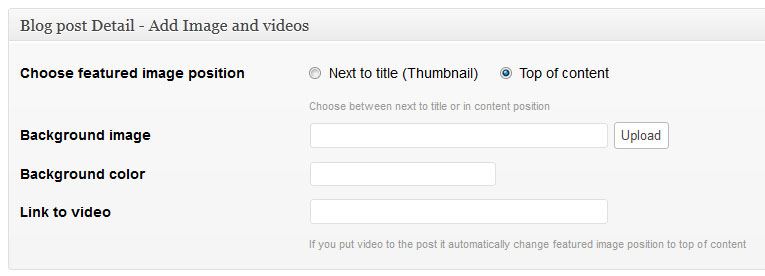
Background image or color
This options allows you to set different background color or image for every page, post or portfolio project.
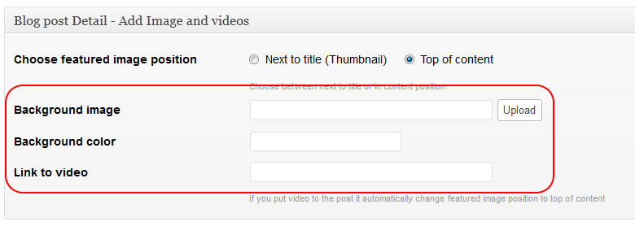
Video support
Video support
Skyfashion theme support Youtube and Vimeo videos, and also HTML 5 types.
For youtube best to use links as : http://www.youtube.com/watch?v=JByDbPn6A1o
For vimeo best to use linkas as: http://vimeo.com/12280336
Any other link will be treated as HTML 5 video. Browsers that understand the HTML5 tag will display MPEG/H.264 (.mp4) files, VP8/webm (.webm), or Ogg/Theora (.ogv) files. Other browsers can use Flash to play the .mp4 or .flv.
Sources and Credits
The scripts used is the project:
- jQuery (http://jquery.com)
- VideoJS (http://videojs.com/)
- FancyBox (http://fancybox.net)
- Masonry (http://masonry.desandro.com)
- Google Fonts (http://www.google.com/webfonts/)
- Masonry (http://masonry.desandro.com)
- jQuery resize plugin (http://benalman.com/projects/jquery-resize-plugin/)
Skyfashion theme use modified code of:
- Flickrpress http://michael.tyson.id.au/wordpress/plugins/flickrpress
Once again, thank you so much for purchasing this theme. As we said at the beginning, we'd be glad to help you if you have any questions relating to this theme. No guarantees, but we'll do our best to assist.
Apollo13 Team